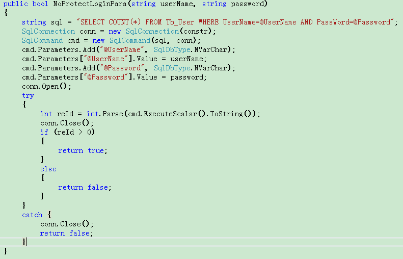
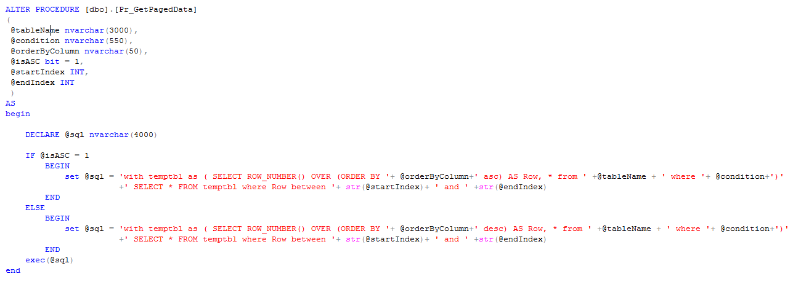
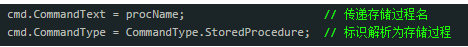
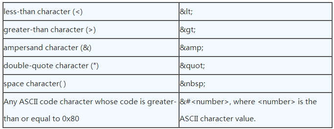
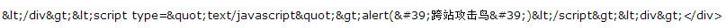

Created by 刘晓东
sql注入漏洞和防护
跨站脚本攻击（XSS）和防护
Web开发中的其他漏洞
程序员在编写代码的时候，没有对用户输入数据的合法性进行判断，使应用程序存在安全隐患。用户可以提交一段数据库查询代码，根据程序返回的结果，获得某些他想得知的数据，这就是所谓的SQL Injection，即SQL注入
攻击者把SQL命令插入到Web表单的输入域或页面请求的查询字符串， 欺骗服务器执行恶意的SQL命令
这个案例中userName和 password 是没有经过任何处理，直接拿前端传入的数据，这样拼接的SQL会存在注入漏洞。（帐户：admin 123456）
合并的SQL为： SELECT COUNT(*) FROM Login WHERE UserName='admin'-- Password='123' 因为UserName值中输入了“--”注释符，后面语句被省略而登录成功。（常常的手法：前面加上'; ' (分号，用于结束前一条语句)，后边加上'--' (用于注释后边的语句)）
1.猜测数据库名，备份数据库
a)猜测数据库名： and db_name() >0
b)备份数据库：;backup database 数据库名 to disk = ‘c:\*.db’;--
2.猜解字段名称
a)猜测数据库名： 猜解法：and (select count(字段名) from 表名)>0 若“字段名”存在，则返回正常
b)读取法：and (select top 1 col_name(object_id('表名'),1) from sysobjects)>0 把col_name(object_id('表名'),1)中的1依次换成2,3,4,5，6…就可得到所有的字段名称。
3.遍历系统的目录结构，分析结构并发现WEB虚拟目录
4.查询当前用户的数据库权限
5.设置新的数据库帐户（得到MSSQL管理员账户）
6.客户端脚本攻击
7.等......
参数化查询
实质：进行了参数过滤，将不符合sql语法的语句过滤出来，针对不同的sql语句执行不同的处理
存储过程（Stored Procedure）是在大型数据库系统中，一组为了完成特定功能的SQL 语句集，经编译后存储在数据库中，用户通过指定存储过程的名字并给出参数（如果该存储过程带有参数）来执行它。
 优点：
a) 安全性高，防止SQL注入并且可设定只有某些用户才能使用指定存储过程。
b)在创建时进行预编译，后续的调用不需再重新编译。
c)可以降低网络的通信量。存储过程方案中用传递存储过程名来代替SQL语句。
缺点：
a) 非应用程序内联代码，调式麻烦。
b)修改麻烦，因为要不断的切换开发工具。（不过也有好的一面，一些易变动的规则做到存储过程中，如变动就不需要重新编译应用程序）
c)如果在一个程序系统中大量的使用存储过程，到程序交付使用的时候随着用户需求的增加会导致数据结构的变化，接着就是系统的相关问题了，最后如果用户想维护该系统可以说是很难。
专业的SQL注入工具及防毒软件
过滤禁止运行法等......
XSS即跨站脚本，发生在目标网站中目标用户的浏览器层面上，当用户浏览器渲染整个HTML文档的过程中， 出现了不被预期的脚本指令并执行时，XSS就会发生。
关键点：
（1）目标网站的目标用户：这里强调了场景。
（2）浏览器：因为这类攻击是由浏览器来解析执行的。浏览器当然不会看到什么就解析什么，它们会严格执行共同约定
的同源策略，不符合规定的就不会执行。
（3）不被预期的：攻击者在输入时提交了可控的脚本内容，然后在输出后被浏览器解析执行了。
举个小栗子（XSS攻击）
#alert(document.cookie)
#alert(document.cookie)
</div><script type="text/javascript">alert('跨站攻击了')</script><div>
真实的攻击中，我们需要替换这样简单的脚本为真正有杀伤力的脚本内容，这就是漏洞利用过程中需要仔细考虑的 事。
我们可以将更多的XSS利用代码放在JS脚本文件中，都准备充足后，将这个链接发给目标用户，并欺骗其点击，目标用户的浏览器就会开始执行我们构造的恶意脚本。
攻击发生后，目标用户的Cookie信息就会被盗取，然后攻击者就可以利用该Cookie控制目标用户的账号权限。
这只是一个例子，真实情况不会这么顺利。比如浏览器的 XSS Filter 防御可能会导致这样的利用无法成功。
盗取来的Cookie并不一定可以控制目标用户的账号权限，等等。
所以，XSS的整个过程中，从漏洞挖掘到漏洞利用，再到进一步利用，各环节都需要看场景，场景通常包括网站对象，
浏览器对象，攻击用户对象等。
总之，我们可以通俗地总结XSS为：想尽一切办法将你的脚本内容在目标网站中目标用户的浏览器上解析执行即可。
反射型XSS(也叫非持久型XSS)
存储型XSS(也叫持久型XSS)
DOMXSS
发出请求时，XSS代码出现在URL中，作为输入提交到服务端，服务端解析后响应，在响应内容中出现这段XSS代码， 最后浏览器解析执行。这个过程像是一次反射，故称为反射型XSS。
存储型CSS和反射型XSS的差别在于：提交的XSS代码会存储在服务端（不管是数据库、内存还是文件系统中）， 下次请求目标页面时不用再提交XSS代码。
最典型的例子是留言板XSS,用户提交一条包含CSS代码的留言存储到数据库，目标用户看到留言板时，那些留言的内容会 从数据库查询出来并显示，浏览器发现有XSS代码就当做正常的HTML与JS解析执行，于是就触发了XSS攻击。
例子中说的就是DOM XSS,它和反射型XSS、存储型XSS、的差别在于，DOM XSS的XSS代码并不需要服务器解析响应的直接参与，触发XSS靠的就是浏览器端的DOM解析，可以认为完全是客户端的事情。
挂马
盗取用户Cookie
DoS（拒绝服务）客户端浏览器
钓鱼攻击，高级钓鱼技巧
编写针对性的XSS病毒，删除目标文章、恶意篡改数据、
劫持用户Web行为，甚至进一步渗透内网
等......
完善过滤体系
永远不相信用户的输入。需要对用户的输入进行处理，只允许输入合法的值，其它值一概过滤掉。
HTML encode
某些情况下，我们不能对用户数据进行严格的过滤，那我们也需要对标签进行转换。
例子中的代码： </div><script type="text/javascript">alert('跨站攻击了')</script><div> 经过转换后：
安装三方的应用防火墙，可以拦截css攻击等......
CSRF(跨站请求伪造)
界面操作劫持等